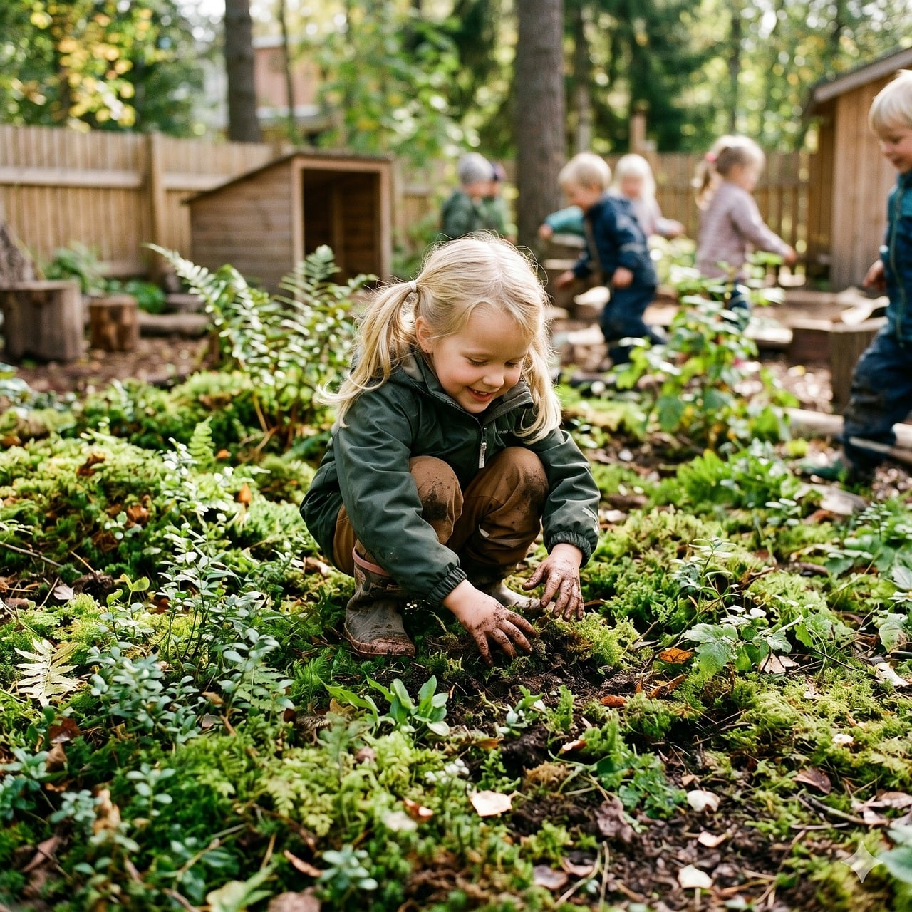
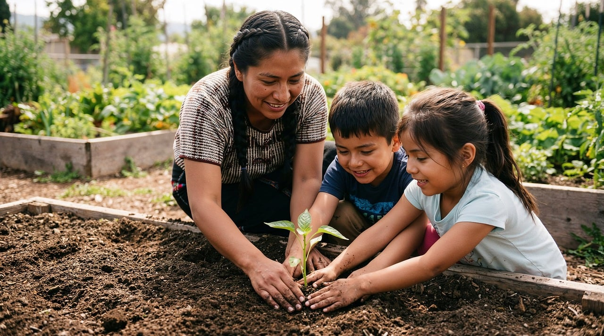
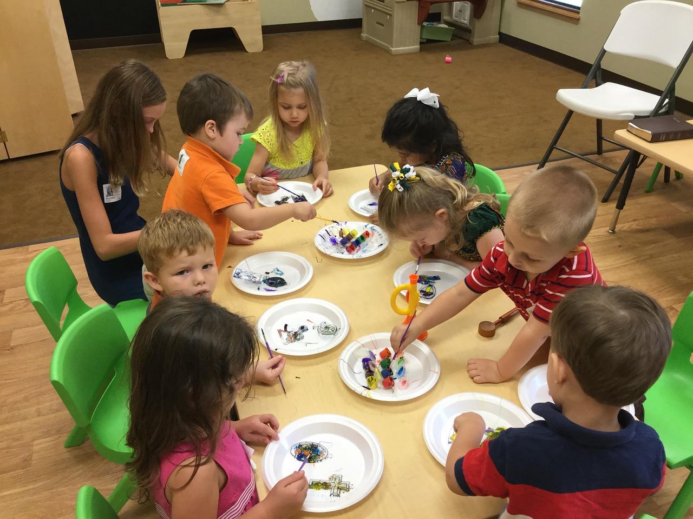

Ages 1–2
Toddler — First Light
A gentle, sensory-rich first experience away from home, full of play, nature, and warmth.
Learn moreAn independent, progressive Quaker school in Quakertown, PA for children ages 1 through 5th grade.


United Friends School is an independent, progressive Quaker school that blends foundational academics with STEAM, outdoor education, creative arts, and collaborative, project-based learning. Rooted in the Quaker testimonies, we nurture curious, compassionate, confident children.
Students of all faiths are welcome. Here, every child is known, valued, and free to wonder.
From first steps to fifth grade, our developmentally-rich programs meet children exactly where they are.
A gentle, sensory-rich first experience away from home, full of play, nature, and warmth.
Learn more
Hands-on discovery, early literacy and numeracy, and big imaginations, guided with care.
Learn more
Project-based, interdisciplinary learning that builds critical thinkers and kind Upstanders.
Learn moreOur community is grounded in values children can feel and carry with them for life.
Non-violent conflict resolution and standing up for what is right.
A close-knit circle of friends where every child belongs.
The light of the spirit lives in every person, equally.
Outdoor learning and stewardship woven through our curriculum.
Honesty, responsibility, and acting in line with our values.
Focus on what truly matters: wonder, growth, and connection.
UFS gives our child individual attention, real critical thinking, and the Quaker values that build genuine confidence. We cannot imagine a more nurturing place to grow.A United Friends School ParentQuakertown, PA
The best way to feel our community is to visit. Schedule a tour and meet the friends, teachers, and classrooms your child will love.
Schedule a Tour